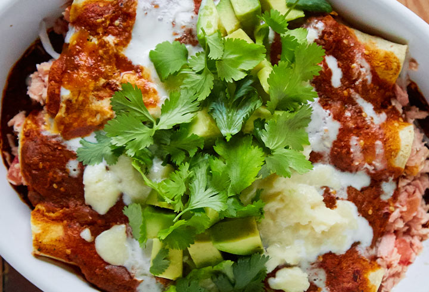

Tuna Enchiladas

Ingredients:
- 1 can of tuna
- 4 or 5 tortillas
- 100 gr of lettuce
- 3 oz of tomato sauce
- 1 oz of olive oil
- Cheese (optional)
Instructions:
- Heat oil on a pan until hot.
- Pour the tomato sauce on a another pan and heat it on low flame.
- Drain the tuna can and let it rest on the side.
- Cook the tortillas in the oil for 20 seconds. Don't leave them in for too long or they will harden. We want them to stay soft so we can roll them into a burrito shape later on.
- Bath the softly fried tortilla in the tomato sauce.
- Put a quarter of the tuna over your tortilla and roll it into a burrito shape.
- Repeat as many times as enchiladas you want.
- Put some chopped lettuce on top of them and pour cream and cheese to taste.
Return to main page.